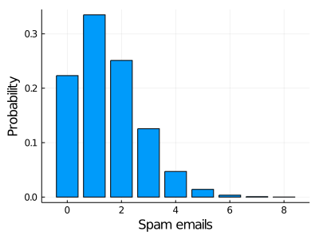
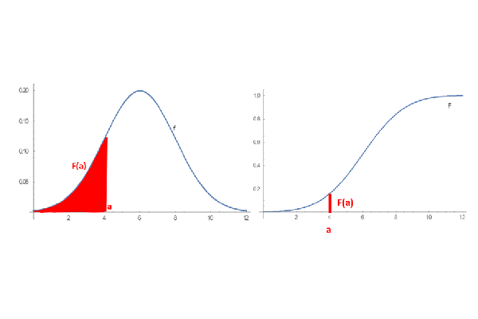
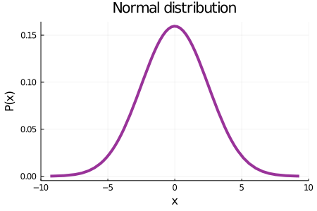
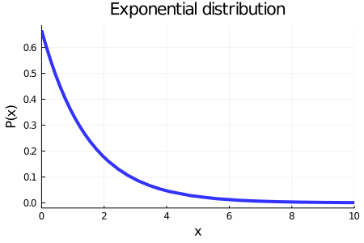
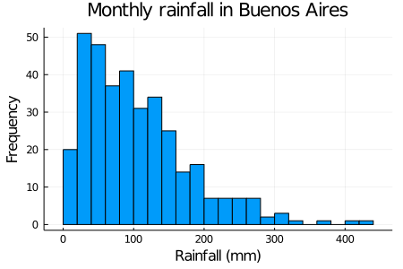
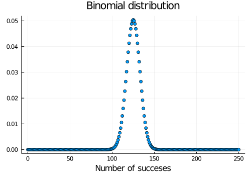
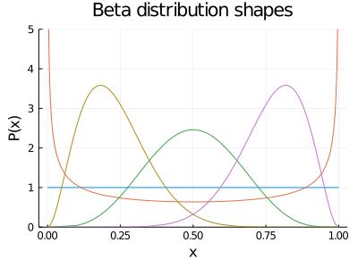
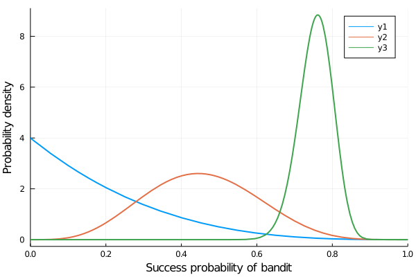

Chapter 4 Probability distributions
So far, we have been talking of probabilities of particular events. Probability distributions, on the other hand, help us compute probabilities of various events. We can distinguish between discrete and continuous cases depending on the possible output of the experiment.
4.1 Discrete Case
If the outputs of our experiment are discrete, then the probability distribution is called a probability mass function, where we assign a probability to each possible outcome.
One of the most popular distributions is the Poisson distribution. Suppose I want to visualize the probability of receiving x spam mails on Mondays.
begin
using Distributions
using StatsPlots
bar(Poisson(1.5), xlabel="Spam emails", ylabel="Probability", legend=false, size=(400, 300))
end
Here we represent the probability of receiving x spam mail in a day. The interpretation of this graph is pretty straightforward. The probability of receiving 0 spam emails on a Monday is approximately 0.2, for 1 spam email is slightly higher than 0.3 and so on, we have the probability of each possible output.
λ=4bar(Poisson(λ), xlabel="x", ylabel="Probability", legend=false, size=(400, 300))
4.2 Continuous cases
Instead of a probability mass function, a continuous variable has a probability density function.
For example, consider the density probability of heights of adult women, given approximately by a Normal distribution,
begin
plot(Normal(64, 3), xlabel="Height (in)", ylabel="Probability density", legend=false, size=(400, 300))
end
In this example, the event space is just all the possible heights a woman could have, in other words, the x axis. The y axis, on the other hand, represents the probability density.
To not delve into complex definitions, we can think of the x label as a steel bar and the y label the density of each infinitesimal point of the bar. If we want to know the mass of a specific segment we need to calculate the area below the curve of that segment (integrate the segment mathematically talking). Since we are using the probability density, instead of the mass what we obtain is the probability.
When we work with continuous variables it is pointless to talk about the probability of a single x value. Think of it in a mathematical way, in a number line there are infinity points in between 0 and 0,01. In this case, our continuous variable is women’s height, since there are infinitely possible heights it has no sense to talk about the probability of a single height, like \(P(6 in)\).
Probability in the continuous case is always computed in an interval. For example, suppose we want to know the probability that a randomly selected woman measures between 60 and 65 inches. To know it we need to calculate the area under the density curve in the intervals x = [60,65].
Keep in mind that the x label contains all possible events, in this case all possible women´s heights, so the area below the curve of all the x label is equal to 1.
An alternative description of the distribution is the cumulative distribution function also called the distribution function. It describes the probability that the random variable is no larger than a given value. We obtain it by integrating the density function and
plot(imresize(load("./03_probability_intro/images/density and cumulative functions.png"), (300, 860)),axis=nothing,border=:none)
On the left is the probability density function and on the right is the cumulative distribution function, which is the area under the probability density curve.
Any mathematical function satisfying certain requirements can be a probability density. There are lots of these types of functions, and each one has its own shape and distinctive properties.
We will introduce some important probability density functions so that you can have a better understanding of what all this is about. Probably, the concept of the Normal distribution –also referred as the Gaussian– was already familiar to you, as it is one of the most popular and widely used distributions in some fields and in popular culture. The shape of this distribution is governed by two parameters, usually represented by the Greek letters \(\mu\) and \(\sigma\). Roughly speaking, \(\mu\) is associated with the center of the distribution and \(\sigma\) with how wide it is
μ = 0 σ= 2.5plot(Normal(μ,σ), xlabel="x", ylabel="P(x)", lw=4, color="purple", label=false, size=(450, 300), alpha=0.8, title="Normal distribution", xlim=(-10, 10))
Every probability density that is defined by a mathematical function, has a set of parameters that defines the distribution’s shape and behaviour, and changing them will influence the distribution in different ways, depending on the one we are working with.
Another widely used distribution is the exponential. Below you can see how it looks. It is governed by only one parameter, \(\alpha\), which basically represents the rate of decrease in probability as \(x\) gets bigger.
One last slider to change the value of the \(α\) parameter of exponential distribution can be implemented if you replicate the code below.
α= 1.5plot(Exponential(α), xlabel="x", ylabel="P(x)", lw=4, color="blue", label=false, size=(450, 300), alpha=0.8, title="Exponential distribution", xlim=(0, 10))
As the book progresses, we will be using a lot of different distributions. They are an important building block in probability and statistics. In the next section, we will discuss a little bit about how probability arises from gathering data.
4.3 Histograms
To illustrate some of these concepts we have been learning, we are going to use monthly rainfall data from the city of Buenos Aires, Argentina, since 1991. The histogram of the data is shown below. You may be wondering what a histogram is. An histogram is a plot that tells us the counts or relative frequencies of a given set of events.
As a data scientist you are constantly working with datasets and a great first approach to that dataset is by constructing a histogram. To construct a histogram, the first step is to bin the range of values that is, divide the entire range of values into a series of intervals and then count how many values fall into each interval
begin
using CSV
using DataFrames
#Read the CSV file and transform it into a DataFrame
rain_data = CSV.read("./03_probability_intro/data/historico_precipitaciones.csv", DataFrame)
#Rename the columns
colnames = ["Year", "Month", "mm", "Days"]
rename!(rain_data, Symbol.(colnames)) #Symbol is the type of object used to represent the labels of a dataset
#We use a dictionary to translate de Month names
translate = Dict("Enero" => "January" ,"Febrero" => "February" ,"Marzo" => "March" ,"Abril" => "April" ,"Mayo" => "May" ,"Junio" => "June" ,"Julio" => "July" ,"Agosto" => "August" ,"Septiembre" => "September" ,"Octubre" => "October" ,"Noviembre" => "November" ,"Diciembre" => "December")
for i in 1:length(rain_data[:,:Month])
rain_data[i,:Month] = translate[rain_data[i,:Month]]
end
endWe can see the first few rows of our data, with columns corresponding to the year, the month, the rain precipitation (in millimeters) and the number of days it rained in that month.
first(rain_data, 8)## 8×4 DataFrame
## Row │ Year Month mm Days
## │ Int64 String Float64 Int64
## ─────┼─────────────────────────────────
## 1 │ 1991 January 190.0 7
## 2 │ 1991 February 30.5 6
## 3 │ 1991 March 55.0 8
## 4 │ 1991 April 125.6 12
## 5 │ 1991 May 68.4 7
## 6 │ 1991 June 119.7 10
## 7 │ 1991 July 89.3 8
## 8 │ 1991 August 66.4 7Now plotting the histogram for the column of rainfall in mm we have the figure shown below. Plotting a histogram is very easy with the Plots.jl package. You just have to pass the array you want to make the histogram of and the number of bins. The other arguments are self-explanatory, and are just to make the plot nicer.
begin
histogram(rain_data[:,"mm"], bins=20, legend=false, size=(450, 300))
title!("Monthly rainfall in Buenos Aires")
xlabel!("Rainfall (mm)")
ylabel!("Frequency")
end
Histograms give us a good approximation of the probability density or mass function. The reason behind this is because we have registered some total number \(N\) of events that happened in some time interval (in this case, one month) and we grouped the number of times each one occurred. In this line of reasoning, events that happened most are more likely to happen, and hence we can say they have a higher probability associated with them. Something important to consider about histograms when dealing with a continuous variable such as, in our case, millimeters of monthly rainfall, are bins and bin size. When working with such continuous variables, the domain in which our data expresses itself (in this case, from 0 mm to approximately 450 mm) is divided in discrete intervals. In this way, given a bin size of 20mm, when constructing our histogram we have to ask ‘how many rainy days have given us a precipitation measurement between 100mm and 120mm?’ and then we register that number in that bin. This process is repeated for all bins to obtain our histogram.
We have earlier said that probability has to be a number between 0 and 1, so how can it be that these relative frequencies are linked to probabilities? What we should do now is to normalize our histogram to have the frequency values constrained. Normalizing is just the action of adjusting the scale of variables, without changing the relative values of our data. Below we show the normalized histogram. You will notice that the frequency values are very low now. The reason for this is that when normalizing, we impose to our histogram data that the sum of the counts of all our events (or, thinking graphically, the total area of the histogram) must be 1. But why? As probability tells us how plausible is an event, if we take into account all the events, we expect that the probability of all those events to be the maximum value, and that value is 1 by convention. When we normalize a histogram, we obtain another histogram that approaches the probability density function. So, we normalize the histogram obtaining:
begin
histogram(rain_data[:,"mm"], bins=20, legend=false, normalize=true, size=(450, 300))
title!("Monthly rainfall in Buenos Aires")
xlabel!("Rainfall [mm]")
ylabel!("Frequency")
end
There is a lot we can say about this plot. First, it is worth noting that a rainfall amount less than \(0\)mm is not possible, that’s why we don’t have any event in this region. On the other hand, we see that a monthly rainfall higher than \(300\)mm is a rare event, and a rainfall higher than \(400\)mm is even less likely to happen.
But why am I inferring how likely is an event to happen in the future with data from the past?
I’m making some assumptions that are often implied working with histograms and measured data: the first assumption is that the data is representative for the variable in consideration, meaning that the data of rainfall was measured well, that it isn’t measured just during winter for example, when we know rainfall is most common. The other big assumption is that things in the future will not change much from things in the past, so if we do the measure again for some time in the near future, the shape of the histogram is going to be more or less the same. These assumptions may or may not hold in the real events, but this doesn’t mean there is something wrong with our analysis or how we model our data. It’s just that we chose some assumptions that seem reasonable with the information we have. And we always have to make some assumptions to obtain answers.
So far we have been talking about histograms as probability density functions. Distributions such as these, that are built from the outcome of an experiment are called empirical distributions. This means that they arise from direct measurements, not from an underlying analytical function. When dealing with most real-world examples, histograms will represent distributions we will obtain for our updated beliefs, so they are a really important concept for what will come in the book.
All the concepts we developed about probability density, are directly applied to our Bayesian formalism. The prior, likelihood and posterior probabilities are really probability densities, and that is really how we treat Bayes’ theorem mathematically and computationally.
4.3.1 Example: Bayesian Bandits
Now we are going to tackle a famous problem that may help us to understand a little bit how to incorporate what we learned about Bayesian probability and some features of the Julia language. Here we present the bandit or multi-armed bandit problem. Although it is conceived thinking about a strategy for a casino situation, there exist a lot of different settings where the same strategy could be applied.
The situation, in it’s simpler form, goes like this: you are in a casino, with a limited amount of casino chips. In front of you there are some slot machines (say, three of them for simplicity). Each machine has some probability \(p_m\) of giving you $1 associated with it, but every machine has a different probability. There are two main problems. First, we don’t know these probabilities beforehand, so we will have to develop some explorative process in order to gather information about the machines. The second problem is that our chips –and thus our possible trials– are limited, and we want to take the most profit we can out of the machines. How do we do this? Finding the machine with the highest success probability and keep playing on it. This tradeoff is commonly known as explore vs. exploit. If we had one million chips we could simply play a lot of times in each machine and thus make a good estimate about their probabilities, but our reward may not be very good, because we would have played so many chips in machines that were not our best option. Conversely, we may have found a machine which we know that has a good success probability, but if we don’t explore the other machines also, we won’t know if it is the best of our options.
This is a kind of problem that is very suited for the Bayesian way of thinking. We start with some information about the slot machines (in the worst case, we know nothing), and we will update our beliefs with the results of our trials. A methodology exists for these explore vs. exploit dilemmas, within many others, which is called Thompson sampling. The algorithm underlying the Thompson sampling can be thought in these successive steps:
- First, assign some probability distribution for your knowledge of the success probability of each slot machine.
- Sample randomly from each of these distributions and check which is the maximum sampled probability.
- Pull the arm of the machine corresponding to that maximum value.
- Update the probability with the result of the experiment.
- Repeat from step 2.
Here we will take some advantage about the math that can be used to model our situation. To model the generation of our data, we can use a distribution we have not yet introduced, the Binomial distribution. This distribution arises when you repeat some experiment that has two possible outcomes, a number N of times. In each individual experiment, the outcomes have some probability \(p\) and \(1-p\) of happening (because there are only two). Let’s see what this Binomial distribution looks like,
p = 0.5N = 250scatter(Binomial(N, p), xlim=300, label=false, title="Binomial distribution", size=(500, 350), xlabel="Number of succeses")
We choose this distribution as it models properly our situation, with \(p\) being the probability we estimate of succeeding with a particular machine, and \(N\) the number of trials we make on the machine. The two possible outcomes are success (we win $1) or fail (we don’t win anything)
So we now use a prior to set our knowledge before making a trial on the slot machine. The thing is, there exists a mathematical hack called conjugate priors. When a likelihood distribution is multiplied by its conjugate prior, the posterior distribution is the same as the prior with its corresponding parameters updated. This trick frees us from the need of using more computation-expensive techniques, that we will be using later in the book. In the particular case of the Binomial distribution, the conjugate prior is the Beta distribution. This is a very flexible distribution, as we can obtain a lot of other distributions as particular cases of the Beta, with specific combinations of its parameters. Below you can see some of the fancy shapes this Beta distribution can obtain
begin
plot(Beta(1, 1), ylim=(0, 5), size=(400, 300), label=false, xlabel="x", ylabel="P(x)", title="Beta distribution shapes")
plot!(Beta(0.5, 0.5), label=false)
plot!(Beta(5, 5), label=false)
plot!(Beta(10, 3), label=false)
plot!(Beta(3, 10), label=false)
end
To start formalizing our problem a bit, we are going to start building our bandits. This is just a way to name our slot machines and some information associated with them. How will we do this? With the help of Julia’s struct. These are objects we can create in Julia and that can be used to store information that has meaning as an entire block. In our case, some relevant information would be to store the probability of each slot machine, and the number of trials. It is more comfortable to carry all this information in one big block, as we later can start creating as many bandits we want, and it would be impossible to keep track of all the parameters. Above we define a struct of a beta bandit, which will store the real probability of success of the bandit, the parameters \(a\) and \(b\) of the Beta distribution, and the total number of tries \(N\) of the bandit. This would correspond to the first step in the Thompson sampling algorithm.
begin
mutable struct beta_bandit
# the real success probability of the bandit
p::Float64
# a parameter from the beta distribution (successes)
a::Int64
# b parameter from the beta distribution (fails)
b::Int64
# total number of trials of bandit
N::Int64
# initialization of the Beta distribution with parameters a=1, b=1 (uniform distribution)
beta_bandit(p=p, a=1, b=1, N=0) = new(p, a, b, N)
end
endGiven that we have constructed our bandit and assigned a probability distribution to it, we define the function to sample from the distribution, as we will be needing it for the second step of the Thompson sampling algorithm.
sample_bandit(bandit::beta_bandit) = rand(Beta(bandit.a, bandit.b))## sample_bandit (generic function with 1 method)Now we need some function to pull an arm of the slot machine and actually test if we get a success or not. This will help us in the second step of the algorithm.
pull_arm(bandit::beta_bandit) = bandit.p > rand()## pull_arm (generic function with 1 method)Finally, we define another function to update the bandit information, based on the result of pulling an arm. This corresponds to the forth step in the Thompson sampling algorithm.
function update_bandit(bandit::beta_bandit, outcome::Bool)
if outcome
bandit.a += 1
else
bandit.b += 1
end
bandit.N += 1
end## update_bandit (generic function with 1 method)With all these functions defined, we are ready to make an experiment and actually see how our strategy works. We will define beforehand a number of trials and the true probabilities of the slot machines. When the experiment is over, we will see how well were the probabilities of each machine were estimated, and the reward we accumulated. If you come up with some other novel strategy, you can test it doing a similar experiment and see how well the probabilities were estimated and the final reward you got. First, we define the total number of trials we are going to make, and then the true probabilities of each slot machine. At the end, we’ll see how well these probabilities were estimated, or, in other words, how well the Thompson sampling helped in the process of gathering information about the bandits.
N_TRIALS = 100## 100BANDIT_PROBABILITIES = [0.3, 0.5, 0.75]## 3-element Array{Float64,1}:
## 0.3
## 0.5
## 0.75function beta_bandit_experiment(band_probs, trials)
bandits = [beta_bandit(p) for p in band_probs]
reward = 0
for i in 1:trials
# _, mxidx = findmax([rand(Beta(bandit.a, bandit.b)) for bandit in bandits])
_, mxidx = findmax([sample_bandit(bandit) for bandit in bandits])
best_bandit = bandits[mxidx]
exp = pull_arm(best_bandit)
if exp
reward += 1
end
update_bandit(best_bandit, exp)
end
plot()
for i in 1:length(bandits)
display(plot!(Beta(bandits[i].a, bandits[i].b), xlim=(0, 1), lw=2, xlabel="Success probability of bandit", ylabel="Probability density"))
end
return reward, current()
end## beta_bandit_experiment (generic function with 1 method)rew, bandit_plot = beta_bandit_experiment(BANDIT_PROBABILITIES, N_TRIALS);bandit_plot
Considering that we have only tried 100 times, the probabilities have been estimated pretty well! Each distribution assigns a high-enough probability to the true value of the bandit probabilities and its surroundings. Other strategies rather than the Thompson sampling can be tested to see how well they perform, this was just a simple example to apply Bayesian probability.
4.4 Summary
In this chapter, we introduced the basic concepts of probability. We talked about the probability of independent events and about conditional probability, which led us to Bayes’ theorem.
Then, we addressed the two main approaches to probability: the frequentist approach and the Bayesian one, where our initial beliefs can be updated with the addition of new data. We also learned what a probability distribution is, we went over a few examples and saw why Bayesians use them to represent probability.
Finally, we saw the multi-armed bandit problem in which we have a limited amount of resources and must allocate them among competing alternatives to infer the one with the highest probability of success. To solve it, we constructed a Bayesian model using the Thompson sampling algorithm.
4.5 References
- Bayesian Statistics the fun way
- Infinite Powers: How Calculus Reveals the Secrets of the Universe
- Statistical Rethinking
- ThinkBayes
- ThinkStats
- Mixture Distribution
- A contextual bandit bake-off
- Bandit Algs page
- Bayesian Methods for Hackers
- An Introduction to Probability Theory and Its Applications, Vol. 1
4.6 Give us feedback
This book is currently in a beta version. We are looking forward to getting feedback and criticism:
- Submit a GitHub issue here.
- Mail us to martina.cantaro@lambdaclass.com
Thank you!